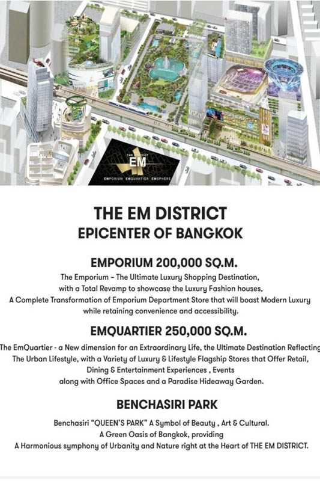
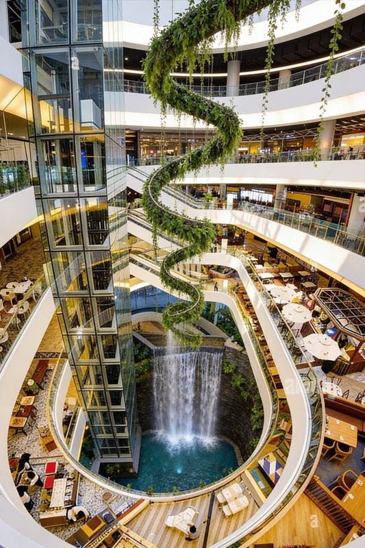

EmQuartier & Emporium represent Bangkok's most sophisticated shopping and lifestyle destination, a connected luxury complex that redefines upscale retail experiences. Located just 4 BTS stops from Royal Ivory Hotel at Phrom Phong station, this innovative development combines premium shopping with lifestyle amenities in a way that's unique among Bangkok's retail destinations.
What sets this complex apart is its integration of luxury retail with wellness and lifestyle experiences. EmQuartier's distinctive spiral architecture houses contemporary brands and the famous Quartier Water Garden, while the connected Emporium offers established luxury shopping and services. Together, they create an environment that's as much about lifestyle as shopping.
For Royal Ivory Hotel guests seeking sophisticated experiences, EmQuartier & Emporium offer a refined alternative to mega-malls. The complex attracts discerning shoppers who appreciate design, quality, and unique amenities like rooftop gardens, wellness facilities, and carefully curated brand selections.
EmQuartier & Emporium are easily accessible via BTS Sukhumvit Line with a direct connection to Phrom Phong station. The journey takes you through some of Bangkok's most upscale neighborhoods, preparing you for the luxury shopping experience ahead.
Total Cost: 60 Baht one-way | Journey Time: 15-18 minutes | Transfers: None required
🌟 Royal Ivory Luxury Experience Tip: Visit EmQuartier & Emporium during weekday mornings for a more exclusive atmosphere. The rooftop gardens are particularly peaceful before afternoon crowds. Consider combining your visit with spa treatments and fine dining for a complete lifestyle experience.
EmQuartier represents the newer, more innovative side of the complex with its distinctive spiral architecture and contemporary approach to luxury retail. The mall's unique design creates an immersive shopping experience that feels more like exploring a luxury resort than traditional retail.
| Floor | Shopping Focus | Key Features | Experience Type |
|---|---|---|---|
| 🌿 Rooftop | Quartier Water Garden, dining | Garden spaces, water features | Wellness & relaxation |
| 🍽️ Upper Floors | Fine dining, specialty restaurants | International cuisine, city views | Premium dining experiences |
| 👗 Mid Floors | Contemporary fashion, lifestyle | International brands, modern design | Fashion-forward shopping |
| 🏢 Ground Level | Beauty, accessories, cafes | Premium cosmetics, quick dining | Convenient luxury shopping |

The Emporium represents the established luxury side of the complex, offering traditional premium shopping with department stores, luxury boutiques, and sophisticated services. It provides a more conventional luxury shopping experience with proven brands and services.
The skybridge connection between EmQuartier and Emporium allows visitors to experience both contemporary and traditional luxury shopping in one visit. This connection creates one of Bangkok's most comprehensive upscale shopping experiences.
Modern luxury: EmQuartier for contemporary brands and lifestyle experiences
Traditional luxury: Emporium for established brands and classic service
Seamless connection: Easy movement between both shopping environments
Full-day potential: Combine shopping, dining, and wellness activities
EmQuartier & Emporium excel in providing premium dining and wellness experiences that extend far beyond traditional shopping mall amenities. The complex focuses on lifestyle experiences that complement the luxury shopping environment.
🧘 Wellness Amenities:
Spa services: Professional spa treatments and wellness therapies
Beauty salons: High-end hair and beauty services
Fitness facilities: Premium gym and fitness class options
Health services: Medical and aesthetic treatment centers
Relaxation spaces: Quiet areas and garden spaces for unwinding
The complex features a carefully curated selection of international and local luxury brands, focusing on quality over quantity. The brand mix emphasizes contemporary luxury and lifestyle products that appeal to sophisticated shoppers.
💎 Premium Services:
Personal shopping: Professional styling and brand guidance
Concierge services: Assistance with shopping, dining, and experiences
VIP experiences: Private shopping appointments and exclusive access
Delivery services: Purchase delivery to hotel or international shipping
Tax refund: Tourist VAT refund processing
From Royal Ivory Hotel: Take BTS Sukhumvit Line from Nana to Phrom Phong (3 stops, 12 minutes). EmQuartier & Emporium are directly connected to BTS Phrom Phong station via skybridge. Total journey: 15-18 minutes including walking time.
EmQuartier & Emporium are open daily from 10:00 AM to 10:00 PM. Individual luxury boutiques may have varying hours. Restaurants typically operate during mall hours, with some fine dining extending to 11:00 PM. Rooftop gardens open 10:00-22:00.
The complex features premium brands including Hugo Boss, COS, Mango, international fashion boutiques, luxury cosmetics, designer accessories, and premium lifestyle brands. EmQuartier focuses on contemporary luxury while Emporium offers established premium brands.
The Quartier Water Garden is EmQuartier's signature rooftop garden featuring water features, greenery, outdoor dining areas, and city views. It's a unique shopping mall amenity offering peaceful outdoor spaces above the urban environment.
Yes, the complex is designed for extended lifestyle experiences. Combine luxury shopping with spa treatments, fine dining, rooftop garden relaxation, and wellness activities. Many visitors spend 4-6 hours enjoying the complete lifestyle experience.
EmQuartier & Emporium offer more than shopping - they provide a sophisticated lifestyle experience that combines retail, dining, wellness, and relaxation in an integrated luxury environment unique among Bangkok's shopping destinations.
Design focus: Architecture and aesthetics as important as shopping
Wellness integration: Health and relaxation built into retail experience
Garden spaces: Unique outdoor amenities rare in Bangkok malls
Lifestyle approach: Shopping as part of complete lifestyle experience